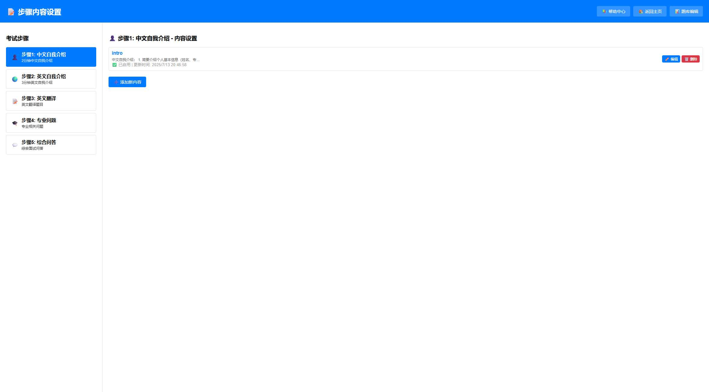

📝 步骤内容设置帮助文档
🎯 功能概述
步骤内容设置是考试系统的核心配置功能，用于管理每个考试步骤的指导内容和说明信息，为考生和考官提供清晰的操作指引。
核心功能：
- 步骤内容管理：为每个考试步骤设置专门的指导内容
- 多内容支持：每个步骤可以包含多个内容块
- 实时编辑：支持在线编辑和即时保存
- 状态管理：控制内容的启用/禁用状态
- 时间追踪：记录内容的创建和更新时间
- 灵活配置：根据需要自定义各步骤的指导信息
🖥️ 界面介绍

图1：步骤内容设置主界面
界面布局说明：
- 顶部导航：页面标题和快捷链接
- 左侧步骤列表：显示所有考试步骤，点击选择
- 右侧内容编辑区：显示选中步骤的内容管理界面
- 内容列表：显示当前步骤的所有内容块
- 操作按钮：编辑、删除、添加等功能按钮
📋 考试步骤管理
系统预设步骤：
| 图标 | 步骤 | 名称 | 默认时长 | 内容用途 |
|---|---|---|---|---|
| 步骤1 | 中文自我介绍 | 2分钟 | 中文自我介绍指导 | |
| 步骤2 | 英文自我介绍 | 3分钟 | 英文自我介绍指导 | |
| 步骤3 | 英文翻译 | 4分钟 | 翻译题目说明 | |
| 步骤4 | 专业问题 | 5分钟 | 专业题目指导 | |
| 步骤5 | 综合问答 | 9分钟 | 综合问答说明 |
注意：每个步骤都可以设置多个内容块，系统会按顺序显示这些内容。
📄 内容管理

图2：内容编辑界面
内容块结构：
- 内容标识：每个内容块有唯一的标识符
- 内容文本：显示给考生和考官的指导信息
- 启用状态：控制内容是否在考试中显示
- 时间戳：记录内容的最后更新时间
内容状态说明：
| 状态标识 | 含义 | 显示效果 |
|---|---|---|
| ✅ 已启用 | 内容正常显示 | 考试时会显示此内容 |
| ❌ 已禁用 | 内容暂时隐藏 | 考试时不会显示此内容 |
✏️ 编辑操作指南
选择步骤：
- 在左侧步骤列表中点击要编辑的步骤
- 右侧会显示该步骤的所有内容
- 如果步骤没有内容，会显示"请选择一个步骤"提示
添加新内容：
- 选择要添加内容的步骤
- 点击按钮
- 在弹出的编辑框中输入内容文本
- 设置内容的启用状态
- 点击保存完成添加
编辑现有内容：
- 在内容列表中找到要编辑的内容
- 点击按钮
- 在编辑框中修改内容文本
- 调整启用/禁用状态（如需要）
- 保存更改
删除内容：
- 点击内容旁的按钮
- 系统会弹出确认对话框
- 确认删除后，内容将永久移除
- 注意：删除操作不可恢复，请谨慎操作
💡 最佳实践
内容编写建议：
- 简洁明了：使用简洁的语言，避免冗长的描述
- 结构清晰：使用编号或要点形式组织内容
- 指导性强：提供具体的操作指导和注意事项
- 适合对象：考虑考生和考官的不同需求
内容示例：
中文自我介绍指导示例：
中文自我介绍：
1. 简要介绍个人基本信息（姓名、专业背景）
2. 突出学术成就和研究兴趣
3. 说明选择本专业的原因
4. 表达对未来学习的期望
管理建议：
- 定期更新：根据考试要求定期更新指导内容
- 版本控制：重要修改前备份原有内容
- 测试验证：修改后在实际考试前进行测试
- 反馈收集：收集考官和考生的反馈，持续改进
🔧 常见问题
Q: 点击步骤后没有显示内容？
可能原因：
- 该步骤还没有添加任何内容
- 所有内容都被禁用了
- 网络连接问题导致加载失败
Q: 保存内容后在考试系统中看不到？
检查项目：
- 确认内容状态为"已启用"
- 刷新考试系统页面
- 检查是否在正确的考试步骤中查看
- 确认保存操作成功完成
Q: 如何批量管理多个步骤的内容？
建议方法：
- 逐个步骤进行编辑，确保内容质量
- 可以复制相似内容后进行修改
- 建立内容模板，提高编辑效率
- 定期备份重要内容
Q: 误删除内容如何恢复？
重要提醒：
系统暂不支持内容恢复功能。建议：
- 删除前仔细确认
- 重要内容提前备份
- 如误删除，需要重新创建内容
🔗 相关功能
与其他功能的关联：
- 考试系统：设置的内容会在相应步骤中显示
- 时间设置：配合考试系统的时间设置功能
- 题库管理：为翻译题和专业题提供指导说明
- 导出功能：内容会包含在考试记录导出中